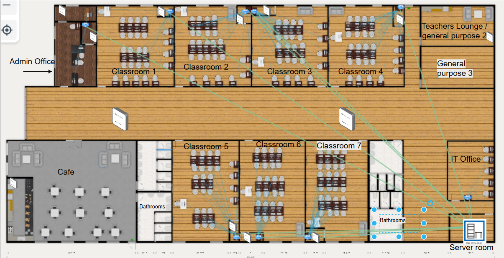
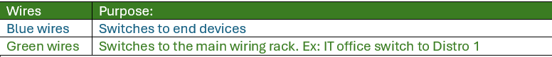
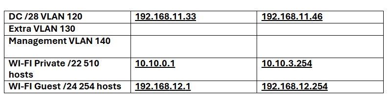

Welcome to the internal documentation wiki for WCAT (Winnipeg College of Advanced Technology). This site is a demo showcasing the internal network, IT infrastructure planning, and topology for a new campus build.
A small Information Technology school is being built nearby. To facilitate learning & work, several IT services are needed. To put simply, the school needs internet access, a directory service, user accounts, internal email communications, a website, network and system redundancy, & security.
The school needs a minimum of 4 subnets & user groups: Students (or guest access), Instructors, Staff (or other Staff outside of Instructional), & IT. Between 250-500 students can be enrolled at a given time. There are 7 lab rooms with 25 workstations per room. Then, 3 general purpose rooms which should have internet access.
Given this background, present a small demo of what the school could expect from your group if contracted to build the full production environment. Construction depends on provided documentation.
Here is WCAT's network diagram. This diagram was made in packet tracer and replicates what our network would look like within the building. However due to our resources our demo will only be about the IT office infrastructure.

Figure: Network Layout Diagram
This is our VLAN table where all our subnets for the network diagram are. Each classroom subnet is a /27 network due to meet the 25 lab workstation requirement. The other subnets are broken down as well to have the appropriate amount of subnets as well. An Extra VLAN of VLAN 130 is added for scalability. The WiFi private and guest subnets are also added for both routers and the internal WiFi router is in the Domain Controllers VLAN.

Figure: VLAN and Subnet Configuration
This is the updated physical network topology for the Winnipeg College of Advanced Technology.
Figure: Updated Physical Network Topology
This layout shows the physical topology of the Winnipeg College of Advanced Technology (WCAT) building. Each classroom and lab space is wired to switches that connect back to the server room.

Figure: WCAT Building Layout & Physical Network Topology
Below is a key to help identify the objects used in our topology layout above. This visual key shows the symbols used for doors, computers, and Ethernet cables.
Figure: Object Key for Network Diagram
The following diagram shows where the topology is located within the building structure to give physical reference to the equipment and wiring layout.

Figure: Topology Equipment Physical Location
This diagram represents the logical topology of the WCAT network. It highlights how each classroom and department is associated with a VLAN. Each VLAN has been assigned a subnet based on its network needs and purpose within the institution.
Figure: Logical Network Topology with VLAN Assignments
This table shows the additional VLANs used in our logical design, including Wi-Fi VLANs and Domain Controller VLANs, with their respective IP address ranges.
Figure: Additional VLAN Subnet IPs